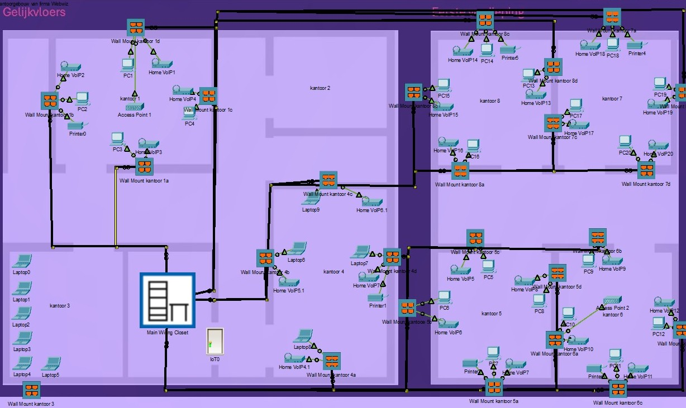

Doel
Voor Webwiz werkte ik een voorstel uit voor een gestructureerd bekabeld netwerk dat logisch, overzichtelijk en uitbreidbaar is. Dit deed ik in een klein groepje van 2.
Project 1
Op deze pagina geef ik een overzicht van de inhoud, aanpak en de kennis die ik tijdens dit project verder heb ontwikkeld.

Voor Webwiz werkte ik een voorstel uit voor een gestructureerd bekabeld netwerk dat logisch, overzichtelijk en uitbreidbaar is. Dit deed ik in een klein groepje van 2.
Het gebouw bestaat uit twee verdiepingen met werkplekken, servers, desktops, laptops, VoIP telefoons en printers die correct aangesloten moeten worden.
Dit project gaf mij meer inzicht in de opbouw van een professionele netwerkinfrastructuur binnen een realistische bedrijfsomgeving.
Webwiz is een groeiend bedrijf met een gelijkvloers en een eerste verdieping. Er zijn 24 werkplekken, 20 desktops, 10 laptops, VoIP telefoons op elke werkplek, 6 kantoren en in elk kantoor een MFP. Daarnaast zijn er 2 on prem servers waarvoor fysieke toegang beperkt moet blijven.
De opdracht stond erin om voor deze situatie een professioneel bekabelingsplan uit te werken volgens de principes van gestructureerd bekabelen, met switchen in een rack, outlets bij de gebruikers en patchpanelen in het rack.
Alle switchen moesten in een rack geplaatst worden in een afgesloten ruimte, met patchpanelen voor een duidelijke en onderhoudsvriendelijke structuur.
Ik moest rekening houden met de afstanden in het gebouw om te bepalen welk type kabel nodig was en of één rack voldoende was.
Er moest ook marge voorzien worden voor toekomstige uitbreiding, zodat het netwerk later verder uitgebouwd kan worden.
Het ontwerp moest ook bruikbaar blijven in echte situaties, zoals nieuwe werkplekken aansluiten, wifi uitbreiden en kabels snel kunnen identificeren.
Ik analyseerde eerst de opdracht en splitste het project op in logische delen. Daarna werkte ik een voorstel uit voor de bekabeling, de rackopstelling en de verbindingen tussen patchpanelen, outlets en netwerkapparatuur.
Zo kreeg ik een beter inzicht in hoe een professioneel netwerkontwerp wordt opgebouwd.
Door dit project heb ik beter geleerd hoe belangrijk structuur, documentatie en uitbreidbaarheid zijn binnen systeem en netwerkbeheer.
Ik kreeg ook meer inzicht in racks, patchpanelen, outlets en het praktisch ontwerpen van een netwerk in een bedrijfscontext.
Analyse
Probleemoplossend denken
Technische uitwerking
Overzicht van kabels, patchpanelen, racks, switchen en andere materialen.
Uitwerking van het netwerk in Packet Tracer met een duidelijke structuur.
Plaatsing van de apparatuur in het rack en koppeling tussen de actieve componenten.
Overzicht van de verbindingen tussen patchpanelen, outlets en switchpoorten.
Dit project heeft mij geholpen om beter te begrijpen hoe je een netwerk op een professionele manier ontwerpt. Ik leerde technisch nadenken, maar ook rekening houden met beheer, overzicht en toekomstgerichte uitbreiding.
Terug naar portfolio